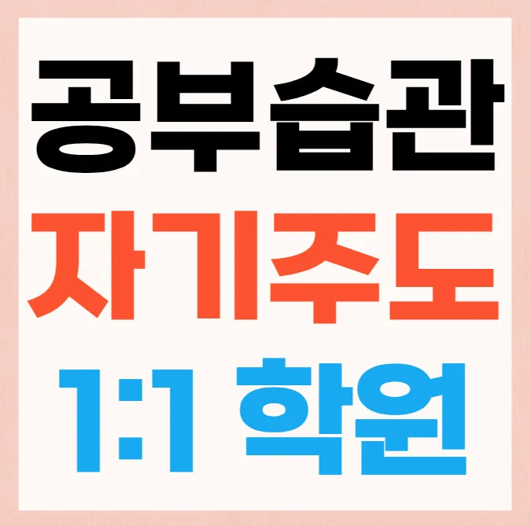

첫째, 교육과정이 체계적으로 짜여 있는지 확인해요. 둘째, 강사의 전공과 현장 경험을 살펴봐요. 셋째, 수업당 학생 수가 적어 맞춤 지도 가능 여부를 검토해요. 네번째, 상현동 와와학습코칭센터 위치가 집이나 학교와 가까워 이동 시간을 절약할 수 있는지 판단해요. 다섯번째, 학습 자료와 교구가 최신인지 확인해요. 예를 들어 중학교 1학년 아들은 숙제는 성실히 해도 문제 풀이 속도가 느려요. 이런 경우 단계별 문제 해결 전략을 제공하는 상현동 와와학습코칭센터을 선택하면 도움이 돼요. 또, 문학 과목에서는 시대적 배경 이해가 중요한데, 이를 토론 중심 수업으로 풀어주는 곳이 효과적이에요. 마지막으로 학부모와의 정기적인 피드백 시스템이 있는지 살펴보면 선택에 큰 도움이 돼요.
상현동은 최근 재개발로 주거 환경이 개선돼 가족들이 학습에 집중하기 좋은 분위기가 조성돼요. 초등 저학년은 짧은 집중 시간과 놀이 중심의 활동을 통해 기본 개념을 즐겁게 익히는 것이 효과적이에요. 초등 고학년은 교과서 심화 내용을 실생활과 연결해 스스로 질문을 만들도록 유도하면 이해도가 높아져요. 중학생은 시험 대비와 동시에 사고력 향상을 목표로 다양한 문제 풀이 전략을 배워야 해요. 고등학생은 대학 입시와 내신 관리가 동시에 진행되므로 전과목 균형 잡힌 학습 계획이 필요해요. 전체 학년에게는 학습 후 복습과 다음 주제 예고를 통해 지속적인 동기 부여가 이루어져요.
이 상현동 와와학습코칭센터은 생각 흐름을 말해보는 방식을 통해 학습자가 스스로 논리 구조를 정리하도록 돕어요. 주요 대상은 중하위권 학생으로, 장기 코칭을 통해 성적 상승을 경험하고 있어요. 커리큘럼은 기본 개념 설명 후 실제 문제에 적용하는 단계로 구성돼요. 초등수학 수강료는 230,000원이며, 중등수학은 280,000원으로 책정돼 있어요. 특히 유리함수 정의부터 시작해 다양한 사례를 연결해 이해를 돕는 점이 큰 장점이에요. 단순 암기보다 새로운 문제 풀이에 집중해 사고력을 키우는 것이 특징이에요. 이런 차별화된 접근 덕분에 학부모들이 만족감을 표하고 있어요.
| 학원명 | 해당 학원 |
| 수강료 | 초등수학 230,000원 | 중등수학 280,000원 |
CURRICULUM
상현동 지역 학습자들을 위해 설계된 커리큘럼은 이전 진도 복습을 철저히 진행해요. 그 후 오늘의 새로운 내용으로 자연스럽게 연결해 흐름을 유지해요. 예시로 연립일차방정식 그래프 해석을 통해 문제 해결 능력을 강화해요. 또한 식사와 수면 리듬을 고정시켜 효율을 높이는 습관을 함께 길러요. 교육 박람회 부스 운영 경험을 활용해 실전 적용 사례를 제공해요. 학생들은 매주 복습 과제를 수행하고 피드백을 받아 스스로 성장해요. 결과적으로 목표 달성률이 크게 향상되고 자신감이 증대돼요. 각 수업 후에는 간단한 복습 퀴즈를 제공해 학습 내용을 즉시 점검해요. 학생들은 이 과정을 통해 자신의 이해도를 스스로 평가하고 다음 단계 준비에 자신감을 얻어요. 전체 커리큘럼은 연중 지속적인 피드백과 목표 재설정을 포함해 학습 성장을 지속적으로 지원해요.
상현동 학생들은 상현동 와와학습코칭센터 선택 단계에서 교과서와 연결되지 않은 과도한 특강에 낭비되는 경우가 많아요. 학부모는 등록 후에 강사의 지도 방식과 피드백 주기가 맞지 않아 학습 효율이 떨어지는 상황을 겪을 수 있어요. 학습 관리 단계에서는 목표 설정이 흐릿하고, 주간 점검이 부족해 동기 부여가 약해지는 경우가 자주 발생해요.
학생을 공부 못하는 애가 아니라 공부 방향이 다른 애로 인식시키는 것이 핵심입니다. 개념 정리 후 재설명 과제를 주고, 친구 튜터링을 통해 설명 능력을 키웁니다. 주간 학습 대시보드로 진행 상황을 시각화하면서 피드백을 즉시 제공해 집중력과 이해도가 동시에 향상됩니다.
중학교 2학년으로 학습 태도는 긍정적이지만 응용 문제 해결에 어려움을 겪는 학생에게 특히 적합해요. 혼자 공부할 때 진도 관리가 어려워 중간에 놓치는 경우가 많은 경우에도 효과적으로 지원해요. 또한 기초 개념은 탄탄하지만 심화 영역에서 자신감이 부족한 학생에게 맞춤형 피드백과 목표 설정을 통해 실력을 끌어올릴 수 있어요. 이런 유형의 학생들은 꾸준한 관리와 체계적인 수업을 통해 큰 성장 가능성을 보여요
첫 방문에서 활기찬 분위기가 아이에게 큰 설렘을 주었어요. 매일 작은 변화를 기록하는 관리 시스템이 동기 부여가 되면서 꾸준히 공부할 수 있었어요. 시험 전 제공된 예상 문제 자료가 실제 시험과 비슷해 실전 감각을 키우는 데 큰 도움이 되었어요. 선생님의 조언이 공부 방향을 명확히 잡아줘서 스스로 계획을 세우는 능력이 늘었어요. 지원 과정에서 세심한 안내가 안정감을 주어 상현동 와와학습코칭센터 선택에 대한 고민이 크게 줄어들었어요.
